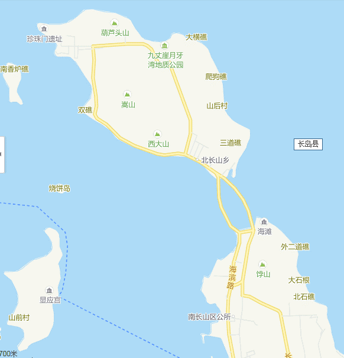

长岛隶属山东省烟台市，又称庙岛群岛，是山东省唯一的海岛县，位于胶东、
辽东半岛之间，黄渤海交汇处，地处环渤海经济圈的连接带，东临韩国、日本。
全县由32个岛屿组成，岛陆面积56平方公里，海域面积8700平方公里，辖8个乡
（镇、街道）2个开发管理处，40个行政村（居委会），总人口4.3万人，素有
“海上仙山”和“天然氧吧”之称，是国家级自然保护区、风景名胜区、森林
公园、海洋文明生态示范区和国家海洋公园、中国十大最美海岛、十大旅游强县，
是全国唯一的海岛型国家大气背景监测站。
九丈崖

九丈崖位于北长山岛的西北角，西依珍珠门水道，北邻国际航线长山水道，距长岛县城11公里。
山崖险峻，水深流急，岩礁棋布，自然景观独树一帜。崖壁绵延400余米，尤以其崖壁罕见的石质组合和高峻险要而著称，在全国众多海蚀崖中独占鳌头。景区集山、海、礁、崖、洞及古迹于一体，融奇、雄、秀、美、险、神于一身，具有很高旅游和美学价值
万鸟岛
万鸟岛，又称车由岛，远远望去，酷似一艘锚泊的登陆舰。全岛海岸线长1.25公里，海岸地貌悬崖陡壁占90％以上，这些如劈如削的断崖，多石英岩与极岩，破碎性强，经风化和海蚀，崖壁此凸彼凹，石阶、石台、石窟、石穴鳞次栉比，形成一座自然的海鸥“石楼”。车由岛环岛无路，唯中部有一涵洞可至山腰，极其险峻，人称“通天路”，走在通天路上，宛如置身于海鸥的王国，随手可以触及到鸟儿的羽翼；待登上山顶，鸟儿则全在脚下了。
望夫礁
望夫礁国家公园坐落在南长山岛的脚下，那里有一礁石迎风而立，形状像一妇女头戴围巾，怀抱婴儿，人称此礁为“望夫礁”。
望夫礁公园自1995年5月开始投入建设，共有五大风景区、36个景点，占地面积3平方公里，工程建设总面积2000平方米，这里集山、水、林于一隅，融岛屿、礁岩、滩石和美丽的传说于一体，显示了自然景观迷人的文化内涵。
这里有一个动人的传说，有一年腊月二十八，一名渔夫被迫出海打渔，突遇强烈风浪而一去不返，他结婚一年多的妻子悲痛欲绝，整天抱着不满月的孩子站在海边，希望有一天奇迹出现，她的丈夫能够平安归来。但是过了很多年，亲人没有归来，她变成了不动的石像伫立在那里。她是旧社会长岛千万个爱情忠贞，命运凄苦的渔妇的缩影。
望夫礁景区位于南山长岛北端，这里视野开阔，岛礁密布，西望玉石街素练分波、 庙岛塘内阡陌纵横，东与大小竹山岛遥相呼应，在滩岸石礁连结处，一尊似祈似盼的望福石孑然而立，为整个景区题画了点睛之笔，滩湾之首，蛟龙探海，一龙头礁及神奇的龙头泉讲述着唐王东征的故事。
{kind=link}
{kind=link}
{kind=link}
{kind=link}